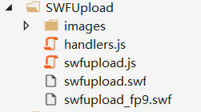

在开发项目中，经常会用到上传图片，接下来我就用一种简单的方式给大家分享一下使用SWFUpload的方式上传图片。
1、在网站根目录下新建一个SWFUpload文件夹，把下载的组建放在SWFUpload文件夹中。SWFUpload包含的文件夹里会包含Images文件夹、handlers.js、swfupload.js、swfupload.swf、swfupload_fp9.swf。

2、把SWFUpload中的js引过来。
<script src="../js/jquery-1.7.1.js"></script>
<script src="../SWFUpload/swfupload.js"></script>
<script src="../SWFUpload/handlers.js"></script>3、在JavaScript中为SWFUpload设置一些基本属性。
<html xmlns="http://www.w3.org/1999/xhtml">
<head runat="server">
<meta http-equiv="Content-Type" content="text/html; charset=utf-8"/>
<title>上传文件</title>
<script src="../js/jquery-1.7.1.js"></script>
<script src="../SwfUpload/handlers.js"></script>
<script src="../SwfUpload/swfupload.js"></script>
<script type="text/javascript">
var swfu;
window.onload = function () {
swfu = new SWFUpload({
//后台设置。
//upload_url：处理上传文件的服务器端页面的url地址。
upload_url: "/ashx/Upload.ashx",
post_params: {
"ASPSESSID": "<%=Session.SessionID %>" //这里用到了一个SessionID，默认即可。
},
//上传文件大小。
file_size_limit: "2 MB",
//上传文件类型，这里可以上传的是jpg、gif、png、可以自己手动加，中间用分号隔开。
file_types: "*.jpg;*.gif;*.png",
//指定在文件选取窗口中显示的文件类型描述，起一个提示和说明的作用
file_types_description: "JPG Images",
//指定要上传的文件的最大体积，该属性为0时，表示不限制文件的大小
file_upload_limit: 0,
//设置一些常用的执行函数。
swfupload_preload_handler: preLoad,
swfupload_load_failed_handler: loadFailed,
file_queue_error_handler: fileQueueError,
file_dialog_complete_handler: fileDialogComplete,
upload_progress_handler: uploadProgress,
upload_error_handler: uploadError,
//上传成功执行的函数。
//upload_success_handler: uploadSuccess,
upload_success_handler: showImage,
//加载完成执行的函数。
upload_complete_handler: uploadComplete,
//Button的一些常用设置。
//图片的路径。
button_image_url: "/SWFUpload/images/XPButtonNoText_160x22.png",
//图片的id。
button_placeholder_id: "spanButtonPlaceholder",
//图片的宽。
button_width: 160,
//图片的高。
button_height: 22,
button_text: '<span class="button">请选择上传图片<span class="buttonSmall">(最大为2MB)</span></span>',
button_text_style: '.button { font-family: Helvetica, Arial, sans-serif; font-size: 14pt; } .buttonSmall { font-size: 10pt; }',
button_text_top_padding: 1,
button_text_left_padding: 5,
//Flash设置。在这里路径千万别错了。
flash_url: "/SWFUpload/swfupload.swf",
flash9_url: "/SWFUpload/swfupload_FP9.swf",
custom_settings: {
upload_target: "divFileProgressContainer"
},
// Debug Settings
debug: false
});
}
//上传成功以后执行的方法，此方法用于将上传的图片显示出来。
//serverData：服务端返回过来的数据。
function showImage(file, serverData) {
//为img的src属性赋值。
$("#showPhoto").attr("src", serverData);
}
</script>
</head>
<body>
<form id="form1" runat="server">
<div id="content">
<div id="swfu_container" style="margin: 0px 10px;">
<div> <span id="spanButtonPlaceholder"></span></div>
<div id="divFileProgressContainer" style="height: 75px;"></div>
<div id="thumbnails"></div>
<img id="showPhoto" style="width:300px;height:300px;"/>
</div>
</div>
</form>
</body>
</html>4、接着写C#代码。
public class Upload : IHttpHandler
{
public void ProcessRequest(HttpContext context)
{
context.Response.ContentType = "text/plain";
//获取文件。
HttpPostedFile file = context.Request.Files["Filedata"];
SaveImage(context,file);
}
private void SaveImage(HttpContext context, HttpPostedFile _file)
{
if (_file != null)
{
//得到文件名。
string fileName = Path.GetFileName(_file.FileName);
//得到文件扩展名。
string fileExtension = Path.GetExtension(_file.FileName);
if (fileExtension.ToLower() == ".jpg")
{
//文件夹的格式为：UploadImage/年/月/日
string dir = "/UploadImage/" + DateTime.Now.Year + "/" + DateTime.Now.Month + "/" + DateTime.Now.Day + "/";
//如果文件夹不存在，就创建。这个地方不要忘了写context.Request.MapPath
if (!Directory.Exists(context.Request.MapPath(dir)))
{
Directory.CreateDirectory(context.Request.MapPath(dir));
}
//创建一个Guid,目的是为了为上传上来的图片命名。
string newFileName = Guid.NewGuid().ToString();
//为图片制定完整路径。UploadImage/2017/8/21/guid.jpg。
string fullPath = dir + newFileName + fileExtension;
//保存。
file.SaveAs(context.Request.MapPath(fullPath));
//把物理路径返回回去。
context.Response.Write(fullPath);
}
}
}
public bool IsReusable
{
get{return false;}
}
}5、效果图。
5.1、运行成功以后，通过点击图片可以进行图片选择
结束。